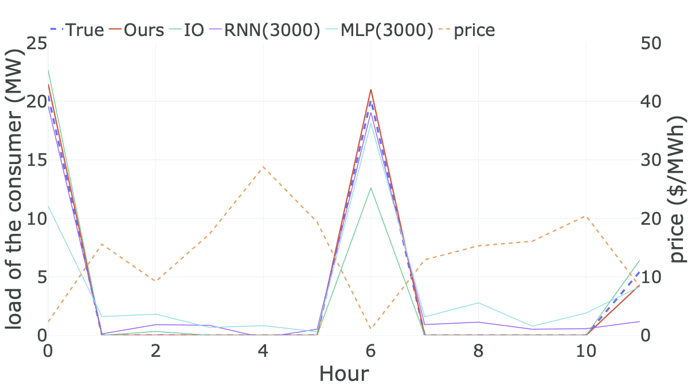
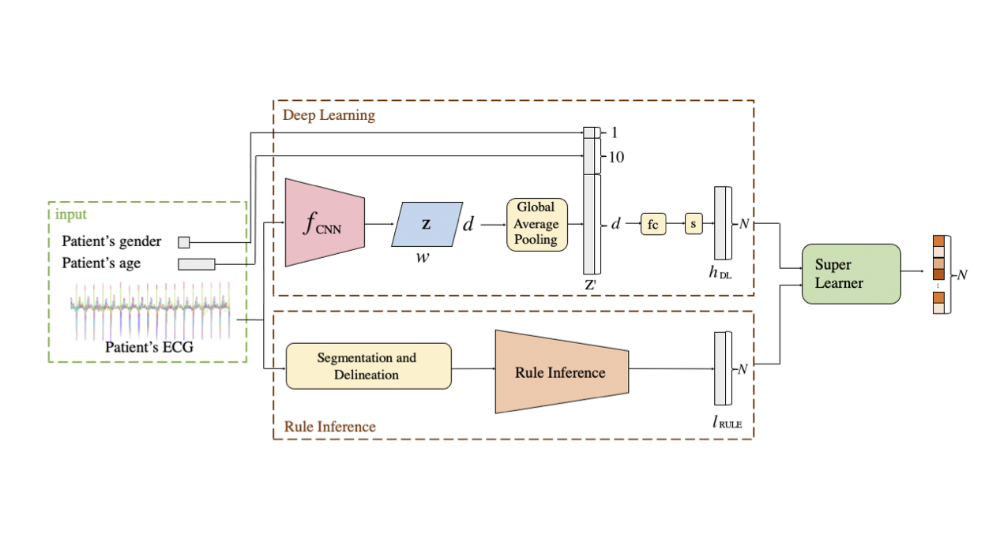

|
Yuexin Bian
yubian at ucsd dot edu
I am a first year PhD student in ECE department at University of California San Diego, advised by Prof. Yuanyuan Shi.
My research interests broadly lie in optimization, control, reinforcement learning and signal processing. Recently I work on designing routing and charging strategy for electric vehicle fleet.
Before starting my graduate education at UC San Diego, I completed my undergraduate degree in Electrical Engineering from Zhejiang University in China.
Email /
Google Scholar /
Github /
LinkedIn
|
|
|
 |
Demand Response Model Identification and Behavior Forecast with OptNet: a Gradient-based Approach
Yuexin Bian, Ningkun Zheng, Zheng Yang, Bolun Xu, Yuanyuan Shi.
The Thirteenth ACM International Conference on Future Energy Systems (ACM e-Energy), 2022.
paper |
bibtex |
code |
@inproceedings{bian2022demand,
title={Demand response model identification and behavior forecast
with OptNet: a gradient-based approach},
author={Bian, Yuexin and Zheng, Ningkun and Zheng, Yang and
Xu, Bolun and Shi, Yuanyuan},
booktitle={Proceedings of the Thirteenth ACM International
Conference on Future Energy Systems},
pages={418--429},
year={2022}
}
In this work, we propose a novel data-driven approach that encodes the prior model knowledge for predicting the behaviors of price-responsive demand resources. We prove that the identified parameters will converge to the true user parameters under a class of quadratic objective and linear equality constrained demand response (DR) models.
|
|
 |
Identifying Electrocardiogram Abnormalities Using a Handcrafted-Rule-Enhanced Neural Network
Yuexin Bian, Jintai Chen, Xiaojun Chen, Xiaoxian Yang, Danny Z Chen, Jian Wu.
IEEE/ACM Transactions on Computational Biology and Bioinformatics, 2022.
arxiv |
bibtex |
code |
@article{bian2022identifying,
title={Identifying Electrocardiogram
Abnormalities Using a Handcrafted-Rule-Enhanced Neural Network},
author={Bian, Yuexin and Chen, Jintai and
Chen, Xiaojun and Yang, Xiaoxian and Chen, Danny Z and Wu, Jian},
journal={IEEE/ACM Transactions on Computational
Biology and Bioinformatics},
year={2022},
publisher={IEEE}
}
We propose a Handcrafted-Rule-enhanced Neural Network (called HRNN) for ECG classification, which consists of a rule inference module and a deep learning module. Our new approach considerably outperforms existing state-of-the-art methods and can assist in detecting mislabelled ECG samples.
|
|
{kind=link}
{kind=link}
{kind=link}